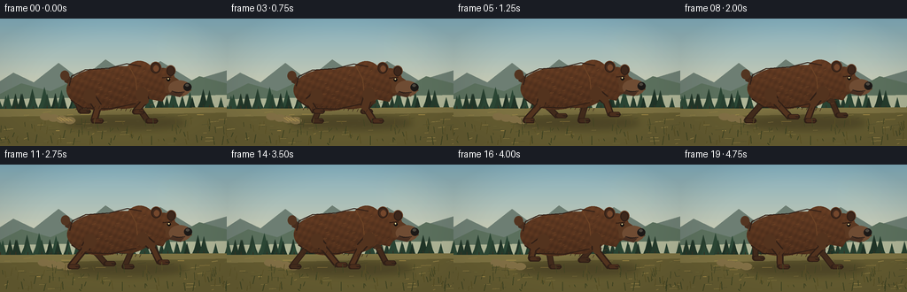
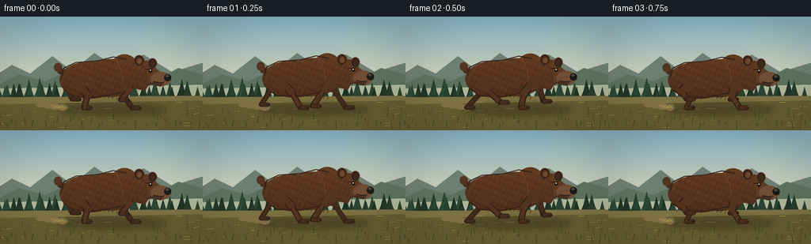

CODING AGENTS AS PIXEL WORLD MODELS
traex/GPT-5.6-Sol · instance_preservation_0012
点击播放 · 原生 RGB 像素
逐轮保存的候选
回放视频、检查图与代码变化。
每份候选均可单独播放。实际图片检查记录在下方工具轨迹中。
候选 01播放与检查图
点击播放 · 原生 RGB 像素

展开代码变化
--- 上一保存版本
+++ 本次保存版本
@@ -0,0 +1,212 @@
+from pathlib import Path
+import math, json
+import numpy as np
+from PIL import Image, ImageDraw, ImageFilter
+import artifact_io
+
+CASE = Path(__file__).resolve().parent
+spec = json.loads((CASE/'task_spec.json').read_text())
+W,H,N = spec['width'],spec['height'],spec['frames']
+S=3
+WW,HH=W*S,H*S
+
+def sc(v): return int(round(v*S))
+def pts(seq): return [(sc(x),sc(y)) for x,y in seq]
+def ellipse(d, box, fill, outline=None, width=1):
+ d.ellipse(tuple(sc(x) for x in box), fill=fill, outline=outline, width=sc(width) if outline else 1)
+def polygon(d,p,fill): d.polygon(pts(p),fill=fill)
+def line(d,p,fill,width=1,joint='curve'): d.line(pts(p),fill=fill,width=sc(width),joint=joint)
+def rounded(d,box,r,fill,outline=None,width=1): d.rounded_rectangle(tuple(sc(x) for x in box),radius=sc(r),fill=fill,outline=outline,width=sc(width))
+
+# fixed world decoration
+rng=np.random.default_rng(42)
+far_trees=[]
+for i in range(44):
+ far_trees.append((i*12+rng.uniform(-4,4), rng.uniform(84,99), rng.uniform(10,24), rng.uniform(.65,1.0)))
+grass_data=[(rng.uniform(-20,300),rng.uniform(113,143),rng.uniform(2,10),rng.uniform(-2,2)) for _ in range(260)]
+
+# limb as tapered connected segments
+def limb(draw, hip, knee, paw, far=False):
+ dark=(65,42,27) if far else (83,51,30)
+ edge=(48,31,22)
+ hx,hy=hip; kx,ky=knee; px,py=paw
+ # broad upper and narrower lower, with dark contour underlay
+ line(draw,[hip,knee],edge,11 if not far else 10)
+ line(draw,[knee,paw],edge,8 if not far else 7)
+ line(draw,[hip,knee],dark,8 if not far else 7)
+ line(draw,[knee,paw],dark,5 if not far else 4.5)
+ ellipse(draw,(kx-4,ky-4,kx+4,ky+4),dark)
+ # long low paw facing forward
+ rounded(draw,(px-3,py-3.3,px+11,py+2.3),2.5,edge)
+ rounded(draw,(px-1,py-2.7,px+10,py+1.2),2,(74,45,28) if not far else dark)
+ for c in range(3):
+ line(draw,[(px+6+c*1.7,py-1),(px+8+c*1.7,py-.2)],(27,23,20),.65)
+
+def leg_pose(anchor, phase, kind, bob):
+ # cyclic planted/swing gait with clear extension
+ s=math.sin(phase); c=math.cos(phase)
+ stride=22 if kind=='fore' else 24
+ px=anchor[0]+stride*s
+ lift=max(0.0,-c)*11
+ py=116-lift+bob*.18
+ # bent knee points opposite direction during recovery
+ if kind=='fore':
+ kx=anchor[0]+8*s-7*c
+ ky=93+7*max(0,c)+bob
+ else:
+ kx=anchor[0]+8*s+8*c
+ ky=94+6*max(0,c)+bob
+ return (kx,ky),(px,py)
+
+def render(fi):
+ t=fi/(N-1)
+ phase=2*math.pi*(3.05*t)+0.2
+ bob=-1.7*abs(math.sin(phase))
+ # background base gradient
+ yy=np.arange(HH)[:,None]
+ sky_top=np.array([130,174,190]); sky_bot=np.array([236,218,176])
+ a=np.clip(yy/(HH*.78),0,1)[...,None]
+ arr=np.tile((sky_top*(1-a)+sky_bot*a),(1,WW,1)).astype(np.uint8)
+ im=Image.fromarray(arr,'RGB'); d=ImageDraw.Draw(im)
+ # subtle sun glow
+ glow=Image.new('RGBA',(WW,HH),(0,0,0,0)); gd=ImageDraw.Draw(glow)
+ for r in range(34,2,-3):
+ alpha=int(2+(34-r)*0.25)
+ ellipse(gd,(202-r,34-r,202+r,34+r),(255,225,161,alpha))
+ im=Image.alpha_composite(im.convert('RGBA'),glow).convert('RGB'); d=ImageDraw.Draw(im)
+ # distant hills
+ cam=t*30
+ polygon(d,[(-10,77),(15,61),(38,72),(66,50),(91,69),(119,46),(149,66),(181,48),(217,70),(274,53),(274,105),(-10,105)],(109,126,115))
+ polygon(d,[(-10,90),(24,73),(57,82),(91,66),(121,83),(158,67),(192,83),(225,65),(274,78),(274,109),(-10,109)],(91,112,93))
+ # mist strip
+ polygon(d,[(-5,91),(261,86),(261,108),(-5,110)],(175,181,151))
+ # far trees parallax
+ for wx,base,hue,shade in far_trees:
+ x=(wx-cam*.35)%285-12
+ y=101
+ h=hue
+ col=(int(45*shade),int(73*shade),int(55*shade))
+ polygon(d,[(x,y-h),(x-h*.24,y-1),(x+h*.24,y-1)],col)
+ polygon(d,[(x,y-h*.72),(x-h*.32,y+1),(x+h*.32,y+1)],col)
+ line(d,[(x,y-h*.15),(x,y+3)],(53,49,34),1)
+ # meadow bands
+ polygon(d,[(-5,102),(261,100),(261,145),(-5,145)],(124,113,65))
+ polygon(d,[(-5,111),(261,106),(261,145),(-5,145)],(100,91,48))
+ # horizontal terrain texture, translated for camera motion
+ for j in range(75):
+ r=np.random.default_rng(1000+j)
+ x=(r.uniform(-10,300)-cam*1.25)%300-15
+ y=r.uniform(105,143)
+ length=r.uniform(2,11)
+ color=r.choice([(151,132,70),(79,77,43),(175,146,73),(106,100,53)])
+ line(d,[(x,y),(x+length,y-r.uniform(0,1.2))],tuple(int(v) for v in color),r.uniform(.35,1.0))
+ # animal shadow
+ sh=Image.new('RGBA',(WW,HH),(0,0,0,0)); sd=ImageDraw.Draw(sh)
+ ellipse(sd,(71,110,210,125),(34,27,18,92))
+ sh=sh.filter(ImageFilter.GaussianBlur(sc(4)))
+ im=Image.alpha_composite(im.convert('RGBA'),sh).convert('RGB'); d=ImageDraw.Draw(im)
+ # dust puffs following rear feet
+ for k in range(4):
+ dx=78-k*9-t*4; dy=115-k*1.4
+ alpha=max(0,80-k*15)
+ ellipse(d,(dx-6,dy-4,dx+7,dy+4),(129,111,69))
+ # gait. Anchors fixed around coherent body
+ ox=0.8*math.sin(t*math.pi) # tracked profile, nearly centered
+ # far legs
+ anchors={'hind':(96+ox,86+bob),'fore':(159+ox,85+bob)}
+ for kind,phoff in [('hind',math.pi),('fore',0.18)]:
+ ph=phase+phoff
+ knee,paw=leg_pose(anchors[kind],ph,kind,bob)
+ limb(d,anchors[kind],knee,paw,far=True)
+ # rear tail behind body
+ polygon(d,[(79+ox,66+bob),(70+ox,61+bob),(73+ox,72+bob),(83+ox,77+bob)],(71,45,29))
+ ellipse(d,(68+ox,59+bob,78+ox,70+bob),(83,53,33))
+ # main bear silhouette mask for textured fill
+ mask=Image.new('L',(WW,HH),0); md=ImageDraw.Draw(mask)
+ # rump, long torso, shoulder hump, neck, head, muzzle
+ ellipse(md,(75+ox,57+bob,153+ox,104+bob),255)
+ ellipse(md,(105+ox,54+bob,174+ox,102+bob),255)
+ ellipse(md,(137+ox,48+bob,177+ox,95+bob),255)
+ polygon(md,[(158+ox,59+bob),(181+ox,57+bob),(196+ox,73+bob),(183+ox,94+bob),(157+ox,89+bob)],255)
+ ellipse(md,(169+ox,56+bob,198+ox,88+bob),255)
+ polygon(md,[(188+ox,68+bob),(211+ox,72+bob),(216+ox,81+bob),(207+ox,88+bob),(186+ox,85+bob)],255)
+ # ears in body mask
+ ellipse(md,(169+ox,49+bob,182+ox,63+bob),255)
+ ellipse(md,(187+ox,53+bob,198+ox,65+bob),255)
+ # fur texture image
+ Y,X=np.mgrid[0:HH,0:WW]
+ # deterministic fine texture and warm top lighting
+ noise=(np.sin(X*.31+Y*.17)+np.sin(X*.09-Y*.23))*4
+ base=np.zeros((HH,WW,3),dtype=np.float32)
+ light=np.clip(1.0-(Y/S-51)/75,0,1)
+ base[:,:,0]=67+30*light+noise
+ base[:,:,1]=40+18*light+noise*.55
+ base[:,:,2]=24+10*light+noise*.25
+ tex=Image.fromarray(np.uint8(np.clip(base,0,255)),'RGB')
+ im.paste(tex,(0,0),mask)
+ d=ImageDraw.Draw(im)
+ # silhouette contour and shoulder anatomy
+ line(d,[(78+ox,76+bob),(81+ox,65+bob),(96+ox,58+bob),(123+ox,56+bob),(143+ox,51+bob),(159+ox,54+bob)],(47,31,23),1.5)
+ line(d,[(80+ox,92+bob),(93+ox,101+bob),(124+ox,102+bob),(153+ox,96+bob)],(47,30,21),1.2)
+ line(d,[(145+ox,53+bob),(153+ox,68+bob),(155+ox,88+bob)],(111,69,38),1)
+ # fur highlights/strokes attached to body
+ fur_rng=np.random.default_rng(700)
+ for q in range(90):
+ x=fur_rng.uniform(80,185)+ox; y=fur_rng.uniform(58,98)+bob
+ # only approximate torso bounds, short directional fur
+ if ((x-122)/52)**2+((y-(79+bob))/26)**2 < 1 or x>145:
+ ln=fur_rng.uniform(1.2,4.2)
+ col=(105,65,36) if q%3 else (124,78,42)
+ line(d,[(x,y),(x-ln,y+fur_rng.uniform(.3,1.2))],col,.45)
+ # ears re-detail
+ ellipse(d,(170+ox,50+bob,181+ox,62+bob),(67,42,28),(44,29,21),1)
+ ellipse(d,(173+ox,53+bob,179+ox,60+bob),(116,71,44))
+ ellipse(d,(188+ox,54+bob,197+ox,65+bob),(61,39,27),(43,28,21),1)
+ # face plane and muzzle
+ polygon(d,[(184+ox,64+bob),(198+ox,67+bob),(208+ox,74+bob),(205+ox,84+bob),(187+ox,84+bob)],(91,57,34))
+ ellipse(d,(190+ox,70+bob,215+ox,88+bob),(111,76,51))
+ # muzzle lower lip
+ polygon(d,[(194+ox,82+bob),(207+ox,84+bob),(203+ox,89+bob),(190+ox,86+bob)],(72,47,33))
+ # nose
+ ellipse(d,(207+ox,73+bob,216+ox,82+bob),(28,25,23))
+ ellipse(d,(209+ox,74+bob,213+ox,77+bob),(76,70,61))
+ line(d,[(208+ox,83+bob),(199+ox,84+bob),(194+ox,82+bob)],(31,25,22),1)
+ # eye and brow
+ line(d,[(183+ox,67+bob),(193+ox,66+bob)],(50,30,20),1.2)
+ ellipse(d,(188+ox,67+bob,192+ox,71+bob),(17,16,14))
+ ellipse(d,(189+ox,67.5+bob,190.5+ox,69+bob),(230,204,144))
+ # near legs, strongly readable over torso
+ for kind,phoff in [('hind',0),('fore',math.pi+0.18)]:
+ ph=phase+phoff
+ anchor=(101+ox,86+bob) if kind=='hind' else (160+ox,84+bob)
+ knee,paw=leg_pose(anchor,ph,kind,bob)
+ limb(d,anchor,knee,paw,far=False)
+ # shaggy upper limb cap
+ ellipse(d,(anchor[0]-7,anchor[1]-6,anchor[0]+7,anchor[1]+10),(83,51,30))
+ # fur edge tufts along belly/back
+ for x in np.linspace(87,158,15):
+ y=101+bob-2*math.sin((x-80)/18)
+ line(d,[(x+ox,y),(x-1.5+ox,y+3)],(55,35,24),.7)
+ # ground contact sparks / bits
+ if fi%3==0:
+ for q in range(7):
+ xx=82-q*2; yy=116-q%2
+ line(d,[(xx,yy),(xx-3-q*.4,yy-2-q*.35)],(184,153,82),.7)
+ # foreground grass (parallax)
+ for j,(wx,y,hg,sl) in enumerate(grass_data):
+ x=(wx-cam*1.9)%292-18
+ if y>119 and j%2==0:
+ col=(63,67,34) if j%3 else (90,81,37)
+ line(d,[(x,y),(x+sl,y-hg)],col,.65 if y<132 else 1)
+ # atmospheric vignette
+ vig=Image.new('RGBA',(WW,HH),(0,0,0,0)); va=np.zeros((HH,WW),dtype=np.uint8)
+ nx=(np.arange(WW)-WW/2)/(WW/2); ny=(np.arange(HH)-HH/2)/(HH/2)
+ rr=ny[:,None]**2+nx[None,:]**2
+ va[:]=np.uint8(np.clip((rr-.45)*28,0,28))
+ v=np.zeros((HH,WW,4),dtype=np.uint8); v[:,:,:3]=np.array([25,29,22]); v[:,:,3]=va
+ im=Image.alpha_composite(im.convert('RGBA'),Image.fromarray(v,'RGBA')).convert('RGB')
+ return np.asarray(im.resize((W,H),Image.Resampling.LANCZOS),dtype=np.uint8)
+
+frames=np.stack([render(i) for i in range(N)])
+artifact_io.save(frames, CASE)
+print('saved',frames.shape,frames.dtype)
可观测工具轨迹
实际执行的命令与返回图片。
命令 1exit 0
/bin/bash -lc "cat prompt.txt && printf '\\n---RULES---\\n' && cat GENERATION_RULES.md && printf '\\n---SPEC---\\n' && cat task_spec.json"
命令 2exit 0
/bin/bash -lc "find . -maxdepth 2 -type f -printf '%p\\n' | sort"
命令 3exit 0
/bin/bash -lc 'cat artifact_io.py'
命令 4exit 0
/bin/bash -lc "cat > generate.py <<'PY'
from pathlib import Path
import math, json
import numpy as np
from PIL import Image, ImageDraw, ImageFilter
import artifact_io
CASE = Path(__file__).resolve().parent
spec = json.loads((CASE/'task_spec.json').read_text())
W,H,N = spec['width'],spec['height'],spec['frames']
S=3
WW,HH=W*S,H*S
def sc(v): return int(round(v*S))
def pts(seq): return [(sc(x),sc(y)) for x,y in seq]
def ellipse(d, box, fill, outline=None, width=1):
d.ellipse(tuple(sc(x) for x in box), fill=fill, outline=outline, width=sc(width) if outline else 1)
def polygon(d,p,fill): d.polygon(pts(p),fill=fill)
def line(d,p,fill,width=1,joint='curve'): d.line(pts(p),fill=fill,width=sc(width),joint=joint)
def rounded(d,box,r,fill,outline=None,width=1): d.rounded_rectangle(tuple(sc(x) for x in box),radius=sc(r),fill=fill,outline=outline,width=sc(width))
# fixed world decoration
rng=np.random.default_rng(42)
far_trees=[]
for i in range(44):
far_trees.append((i*12+rng.uniform(-4,4), rng.uniform(84,99), rng.uniform(10,24), rng.uniform(.65,1.0)))
grass_data=[(rng.uniform(-20,300),rng.uniform(113,143),rng.uniform(2,10),rng.uniform(-2,2)) for _ in range(260)]
# limb as tapered connected segments
def limb(draw, hip, knee, paw, far=False):
dark=(65,42,27) if far else (83,51,30)
edge=(48,31,22)
hx,hy=hip; kx,ky=knee; px,py=paw
# broad upper and narrower lower, with dark contour underlay
line(draw,[hip,knee],edge,11 if not far else 10)
line(draw,[knee,paw],edge,8 if not far else 7)
line(draw,[hip,knee],dark,8 if not far else 7)
line(draw,[knee,paw],dark,5 if not far else 4.5)
ellipse(draw,(kx-4,ky-4,kx+4,ky+4),dark)
# long low paw facing forward
rounded(draw,(px-3,py-3.3,px+11,py+2.3),2.5,edge)
rounded(draw,(px-1,py-2.7,px+10,py+1.2),2,(74,45,28) if not far else dark)
for c in range(3):
line(draw,[(px+6+c*1.7,py-1),(px+8+c*1.7,py-.2)],(27,23,20),.65)
def leg_pose(anchor, phase, kind, bob):
# cyclic planted/swing gait with clear extension
s=math.sin(phase); c=math.cos(phase)
stride=22 if kind=='fore' else 24
px=anchor[0]+stride*s
lift=max(0.0,-c)*11
py=116-lift+bob*.18
# bent knee points opposite direction during recovery
if kind=='fore':
kx=anchor[0]+8*s-7*c
ky=93+7*max(0,c)+bob
else:
kx=anchor[0]+8*s+8*c
ky=94+6*max(0,c)+bob
return (kx,ky),(px,py)
def render(fi):
t=fi/(N-1)
phase=2*math.pi*(3.05*t)+0.2
bob=-1.7*abs(math.sin(phase))
# background base gradient
yy=np.arange(HH)[:,None]
sky_top=np.array([130,174,190]); sky_bot=np.array([236,218,176])
a=np.clip(yy/(HH*.78),0,1)[...,None]
arr=np.tile((sky_top*(1-a)+sky_bot*a),(1,WW,1)).astype(np.uint8)
im=Image.fromarray(arr,'RGB'); d=ImageDraw.Draw(im)
# subtle sun glow
glow=Image.new('RGBA',(WW,HH),(0,0,0,0)); gd=ImageDraw.Draw(glow)
for r in range(34,2,-3):
alpha=int(2+(34-r)*0.25)
ellipse(gd,(202-r,34-r,202+r,34+r),(255,225,161,alpha))
im=Image.alpha_composite(im.convert('RGBA'),glow).convert('RGB'); d=ImageDraw.Draw(im)
# distant hills
cam=t*30
polygon(d,[(-10,77),(15,61),(38,72),(66,50),(91,69),(119,46),(149,66),(181,48),(217,70),(274,53),(274,105),(-10,105)],(109,126,115))
polygon(d,[(-10,90),(24,73),(57,82),(91,66),(121,83),(158,67),(192,83),(225,65),(274,78),(274,109),(-10,109)],(91,112,93))
# mist strip
polygon(d,[(-5,91),(261,86),(261,108),(-5,110)],(175,181,151))
# far trees parallax
for wx,base,hue,shade in far_trees:
x=(wx-cam*.35)%285-12
y=101
h=hue
col=(int(45*shade),int(73*shade),int(55*shade))
polygon(d,[(x,y-h),(x-h*.24,y-1),(x+h*.24,y-1)],col)
polygon(d,[(x,y-h*.72),(x-h*.32,y+1),(x+h*.32,y+1)],col)
line(d,[(x,y-h*.15),(x,y+3)],(53,49,34),1)
# meadow bands
polygon(d,[(-5,102),(261,100),(261,145),(-5,145)],(124,113,65))
polygon(d,[(-5,111),(261,106),(261,145),(-5,145)],(100,91,48))
# horizontal terrain texture, translated for camera motion
for j in range(75):
r=np.random.default_rng(1000+j)
x=(r.uniform(-10,300)-cam*1.25)%300-15
y=r.uniform(105,143)
length=r.uniform(2,11)
color=r.choice([(151,132,70),(79,77,43),(175,146,73),(106,100,53)])
line(d,[(x,y),(x+length,y-r.uniform(0,1.2))],tuple(int(v) for v in color),r.uniform(.35,1.0))
# animal shadow
sh=Image.new('RGBA',(WW,HH),(0,0,0,0)); sd=ImageDraw.Draw(sh)
ellipse(sd,(71,110,210,125),(34,27,18,92))
sh=sh.filter(ImageFilter.GaussianBlur(sc(4)))
im=Image.alpha_composite(im.convert('RGBA'),sh).convert('RGB'); d=ImageDraw.Draw(im)
# dust puffs following rear feet
for k in range(4):
dx=78-k*9-t*4; dy=115-k*1.4
alpha=max(0,80-k*15)
ellipse(d,(dx-6,dy-4,dx+7,dy+4),(129,111,69))
# gait. Anchors fixed around coherent body
ox=0.8*math.sin(t*math.pi) # tracked profile, nearly centered
# far legs
anchors={'hind':(96+ox,86+bob),'fore':(159+ox,85+bob)}
for kind,phoff in [('hind',math.pi),('fore',0.18)]:
ph=phase+phoff
knee,paw=leg_pose(anchors[kind],ph,kind,bob)
limb(d,anchors[kind],knee,paw,far=True)
# rear tail behind body
polygon(d,[(79+ox,66+bob),(70+ox,61+bob),(73+ox,72+bob),(83+ox,77+bob)],(71,45,29))
ellipse(d,(68+ox,59+bob,78+ox,70+bob),(83,53,33))
# main bear silhouette mask for textured fill
mask=Image.new('L',(WW,HH),0); md=ImageDraw.Draw(mask)
# rump, long torso, shoulder hump, neck, head, muzzle
ellipse(md,(75+ox,57+bob,153+ox,104+bob),255)
ellipse(md,(105+ox,54+bob,174+ox,102+bob),255)
ellipse(md,(137+ox,48+bob,177+ox,95+bob),255)
polygon(md,[(158+ox,59+bob),(181+ox,57+bob),(196+ox,73+bob),(183+ox,94+bob),(157+ox,89+bob)],255)
ellipse(md,(169+ox,56+bob,198+ox,88+bob),255)
polygon(md,[(188+ox,68+bob),(211+ox,72+bob),(216+ox,81+bob),(207+ox,88+bob),(186+ox,85+bob)],255)
# ears in body mask
ellipse(md,(169+ox,49+bob,182+ox,63+bob),255)
ellipse(md,(187+ox,53+bob,198+ox,65+bob),255)
# fur texture image
Y,X=np.mgrid[0:HH,0:WW]
# deterministic fine texture and warm top lighting
noise=(np.sin(X*.31+Y*.17)+np.sin(X*.09-Y*.23))*4
base=np.zeros((HH,WW,3),dtype=np.float32)
light=np.clip(1.0-(Y/S-51)/75,0,1)
base[:,:,0]=67+30*light+noise
base[:,:,1]=40+18*light+noise*.55
base[:,:,2]=24+10*light+noise*.25
tex=Image.fromarray(np.uint8(np.clip(base,0,255)),'RGB')
im.paste(tex,(0,0),mask)
d=ImageDraw.Draw(im)
# silhouette contour and shoulder anatomy
line(d,[(78+ox,76+bob),(81+ox,65+bob),(96+ox,58+bob),(123+ox,56+bob),(143+ox,51+bob),(159+ox,54+bob)],(47,31,23),1.5)
line(d,[(80+ox,92+bob),(93+ox,101+bob),(124+ox,102+bob),(153+ox,96+bob)],(47,30,21),1.2)
line(d,[(145+ox,53+bob),(153+ox,68+bob),(155+ox,88+bob)],(111,69,38),1)
# fur highlights/strokes attached to body
fur_rng=np.random.default_rng(700)
for q in range(90):
x=fur_rng.uniform(80,185)+ox; y=fur_rng.uniform(58,98)+bob
# only approximate torso bounds, short directional fur
if ((x-122)/52)**2+((y-(79+bob))/26)**2 < 1 or x>145:
ln=fur_rng.uniform(1.2,4.2)
col=(105,65,36) if q%3 else (124,78,42)
line(d,[(x,y),(x-ln,y+fur_rng.uniform(.3,1.2))],col,.45)
# ears re-detail
ellipse(d,(170+ox,50+bob,181+ox,62+bob),(67,42,28),(44,29,21),1)
ellipse(d,(173+ox,53+bob,179+ox,60+bob),(116,71,44))
ellipse(d,(188+ox,54+bob,197+ox,65+bob),(61,39,27),(43,28,21),1)
# face plane and muzzle
polygon(d,[(184+ox,64+bob),(198+ox,67+bob),(208+ox,74+bob),(205+ox,84+bob),(187+ox,84+bob)],(91,57,34))
ellipse(d,(190+ox,70+bob,215+ox,88+bob),(111,76,51))
# muzzle lower lip
polygon(d,[(194+ox,82+bob),(207+ox,84+bob),(203+ox,89+bob),(190+ox,86+bob)],(72,47,33))
# nose
ellipse(d,(207+ox,73+bob,216+ox,82+bob),(28,25,23))
ellipse(d,(209+ox,74+bob,213+ox,77+bob),(76,70,61))
line(d,[(208+ox,83+bob),(199+ox,84+bob),(194+ox,82+bob)],(31,25,22),1)
# eye and brow
line(d,[(183+ox,67+bob),(193+ox,66+bob)],(50,30,20),1.2)
ellipse(d,(188+ox,67+bob,192+ox,71+bob),(17,16,14))
ellipse(d,(189+ox,67.5+bob,190.5+ox,69+bob),(230,204,144))
# near legs, strongly readable over torso
for kind,phoff in [('hind',0),('fore',math.pi+0.18)]:
ph=phase+phoff
anchor=(101+ox,86+bob) if kind=='hind' else (160+ox,84+bob)
knee,paw=leg_pose(anchor,ph,kind,bob)
limb(d,anchor,knee,paw,far=False)
# shaggy upper limb cap
ellipse(d,(anchor[0]-7,anchor[1]-6,anchor[0]+7,anchor[1]+10),(83,51,30))
# fur edge tufts along belly/back
for x in np.linspace(87,158,15):
y=101+bob-2*math.sin((x-80)/18)
line(d,[(x+ox,y),(x-1.5+ox,y+3)],(55,35,24),.7)
# ground contact sparks / bits
if fi%3==0:
for q in range(7):
xx=82-q*2; yy=116-q%2
line(d,[(xx,yy),(xx-3-q*.4,yy-2-q*.35)],(184,153,82),.7)
# foreground grass (parallax)
for j,(wx,y,hg,sl) in enumerate(grass_data):
x=(wx-cam*1.9)%292-18
if y>119 and j%2==0:
col=(63,67,34) if j%3 else (90,81,37)
line(d,[(x,y),(x+sl,y-hg)],col,.65 if y<132 else 1)
# atmospheric vignette
vig=Image.new('RGBA',(WW,HH),(0,0,0,0)); va=np.zeros((HH,WW),dtype=np.uint8)
nx=(np.arange(WW)-WW/2)/(WW/2); ny=(np.arange(HH)-HH/2)/(HH/2)
rr=ny[:,None]**2+nx[None,:]**2
va[:]=np.uint8(np.clip((rr-.45)*28,0,28))
v=np.zeros((HH,WW,4),dtype=np.uint8); v[:,:,:3]=np.array([25,29,22]); v[:,:,3]=va
im=Image.alpha_composite(im.convert('RGBA'),Image.fromarray(v,'RGBA')).convert('RGB')
return np.asarray(im.resize((W,H),Image.Resampling.LANCZOS),dtype=np.uint8)
frames=np.stack([render(i) for i in range(N)])
artifact_io.save(frames, CASE)
print('saved',frames.shape,frames.dtype)
PY
python generate.py"视觉工具实际返回图片 1

视觉工具实际返回图片 2

保存候选 1 份；完成命令 4 次；可验证图片返回 2 张。原始 API 响应与完整日志保留在本地。